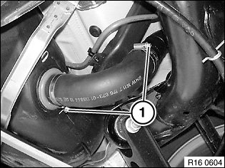
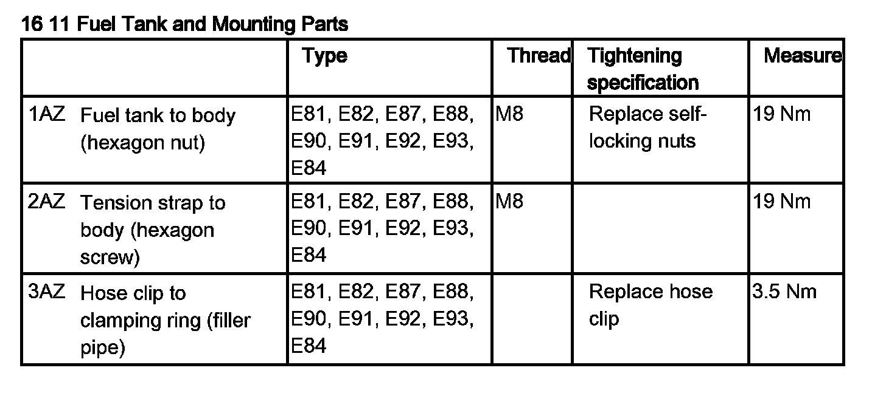

16 11 071 Replacing Rubber Sleeve Between Fuel Filler Pipe and Fuel Tank
16 11 071 Replacing Rubber Sleeve Between Fuel Filler Pipe And Fuel Tank

Recycling
Fuel escapes when fuel lines are detached. Have a suitable collecting container ready.
Catch and dispose of escaping fuel.
Observe country-specific waste disposal regulations.

IMPORTANT:
Ensure adequate ventilation in the place of work.
Avoid skin contact (wear gloves).
Before starting the engine for the first time:
- Fill fuel tank with at least 5 liters of fuel.
- Check ground connection at fuel filler neck to body for continuity. If necessary, clean contact surface between body and fuel filler pipe screw connection.

Necessary preliminary tasks:
- Draw off fuel from fuel tank

IMPORTANT:
There may still be residual amounts of fuel in the tank.
Catch and dispose of escaping fuel.
If necessary, draw off residual amount of fuel via filler hose.
Loosen hose clamps (1).
Detach rubber sleeve first from fuel filler pipe and then from fuel tank.
Installation:
Tightening torque 16 11 3AZ.
